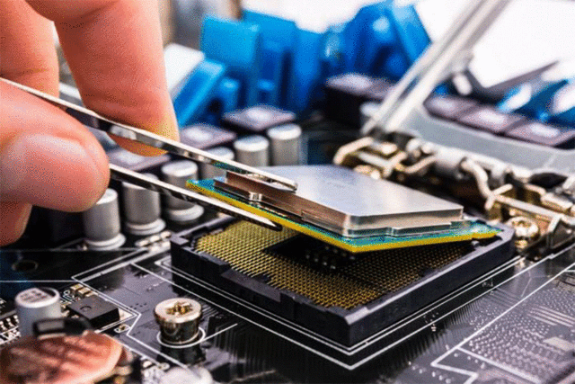
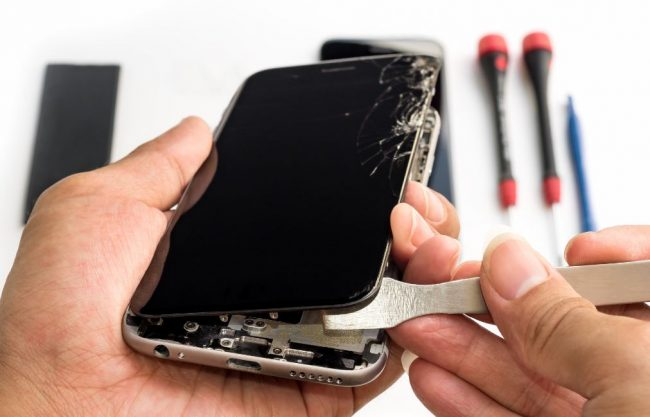
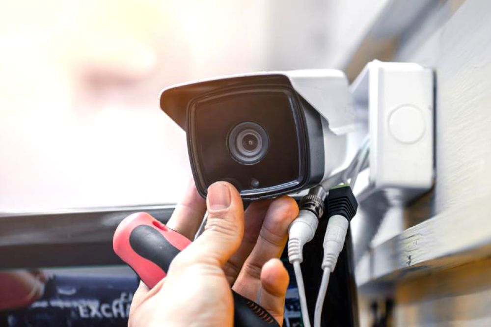

Reparacion de PC y Notebook
Diagnóstico y resolución de problemas de hardware y software.
Instalación, actualización y mantenimiento de sistemas operativos y programas.
Reparación y reemplazo de piezas y componentes defectuosos.
Recuperación de datos perdidos o eliminados accidentalmente.
Configuración de redes y conexión a internet.
Capacitación y asesoramiento sobre el uso adecuado y el mantenimiento de la computadora.

Reparacion de Celulares y tablet
Reemplazo de la pantalla: esta es una de las reparaciones más comunes, ya que la pantalla es una de las partes más vulnerables del teléfono y es fácil de dañar en una caída o golpe.
Reparación o reemplazo de la batería: cuando la batería del teléfono comienza a fallar, es posible que se deba reemplazar para mantener el buen funcionamiento del teléfono.
Reparación de componentes internos: como los botones de encendido, los botones de volumen o los altavoces.
Actualización o reinstalación del software: a veces los problemas pueden deberse a un software obsoleto o corrupto y es necesario actualizar o reinstalar el sistema operativo del teléfono.
Reparación de la cámara: si la cámara no funciona correctamente, es posible que se deba reparar o reemplazar.

Venta e Instalacion de Camaras de seguridad
Evaluación del espacio: un proveedor de instalación de cámaras de seguridad evaluará el espacio y las necesidades de seguridad para determinar la ubicación y el número de cámaras necesarias para proporcionar la cobertura adecuada.
Instalación de las cámaras: una vez que se ha determinado la ubicación de las cámaras, un técnico las instalará en la ubicación correspondiente. Esto puede incluir la instalación de soportes de montaje, la fijación de las cámaras a la estructura y la conexión de cables.
Configuración del sistema: una vez que las cámaras están instaladas, el proveedor de servicios configurará el sistema para que las cámaras graben y almacenen imágenes de video en un dispositivo de grabación, como un DVR o un NVR.